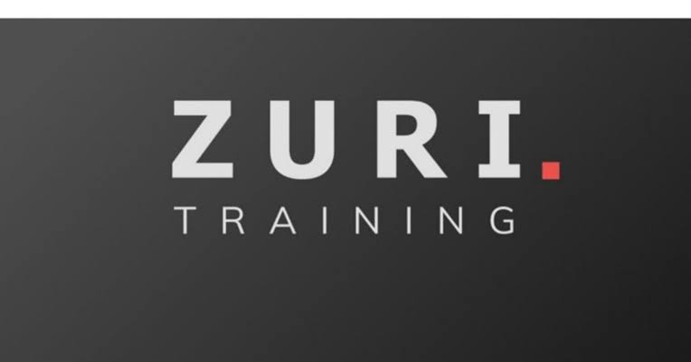
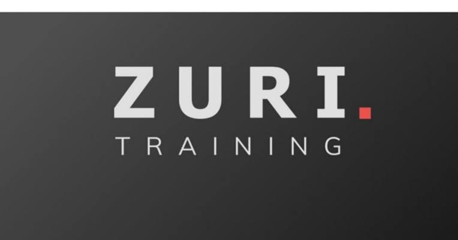

HNG INTERNSHIP 8.0  ZURI TEAM
HNG INTERNSHIP 8.0  ZURI TEAMPROFILE
An independent and self-motivated computer science graduate with passion for technology, hoping to begin a career in an Information Technology company. Skilled in building websites and willing to grow through continous, personal and professional development.
SOFT SKILLS
- Strong numerical ability
- Excellent communication skills
- Team work and collaboration
- Energetic work attitude
- Fast learner
HARD SKILLS
- Html
- Css
- Javascript
- Bootstrap
- Figma
WORK EXPERIENCE
NERVE MOBILE Lagos State Oct 2018 – Mar 2019
Public Relations and Office Assistant
- Effectively Managed the company’s website which resulted into the growth and development of the company
- Maintained a consistently high level of the organization’s publicity, public image and relationships.
- Resolved every public relations (PR) issues
- Collaborated with internal teams (e.g. marketing) and learnt team work.
- Kept accurate records of products
DESTINED TO WIN PRIMARY AND SECONDARY SCHOOL Cross River State Sept 2019 – July 2020
Course Facilitator (Mathematics/Computer Science/Quantitative Reasoning)
- Efficiently taught, coordinated and mentored students which led to better performances in their results academically
- Computed and collated reports on the individual performances of the students
PROGRESSIVE AND SOLID FOUNDATION SCHOOL Lagos State Oct 2020 – May 2021
Educator
- Introduced new activities to improve pupil’s development
- Mentored pupils to success in entrance examinations
- Efficiently taught pupils which led to better performances and increase in school in-takes
JUMIA NIGERIA Lagos State May 2021 - Present
Customer Experience
- Ensuring customer's needs are met
- Answering questions and resolving complaints
- Ensuring customer satisfaction
- Consistently providing professional and friendly service
ACADEMIC QUALIFICATIONS
- B.Sc. Computer Science Federal University of Abeokuta (FUNAAB)2019
- Livingstone College of Arts and Science (SSCE) Oyo state2010